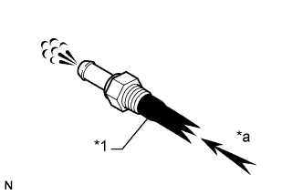
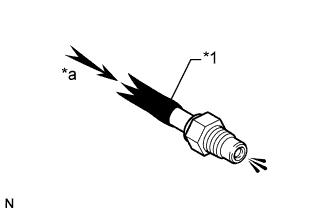

КЛАПАН ПРИНУДИТЕЛЬНОЙ ВЕНТИЛЯЦИИ КАРТЕРА > ПРОВЕРКА |
| 1. ПРОВЕРЬТЕ КЛАПАН ПРИНУДИТЕЛЬНОЙ ВЕНТИЛЯЦИИ КАРТЕРА В СБОРЕ |
Установите чистый шланг на клапан принудительной вентиляции картера.
Проверьте работу клапана принудительной вентиляции картера.
|  |
Подайте воздух со стороны головки блока цилиндров и убедитесь, что воздух проходит свободно.
| *1 | Чистый шланг |
| *a | Сторона головки блока цилиндров |
 | Воздух |
|  |
Подайте воздух со стороны впускного коллектора и убедитесь в затрудненном прохождении воздуха.
| *1 | Чистый шланг |
| *a | Сторона впускного коллектора |
| Воздух |
Отсоедините чистый шланг от клапана принудительной вентиляции картера.